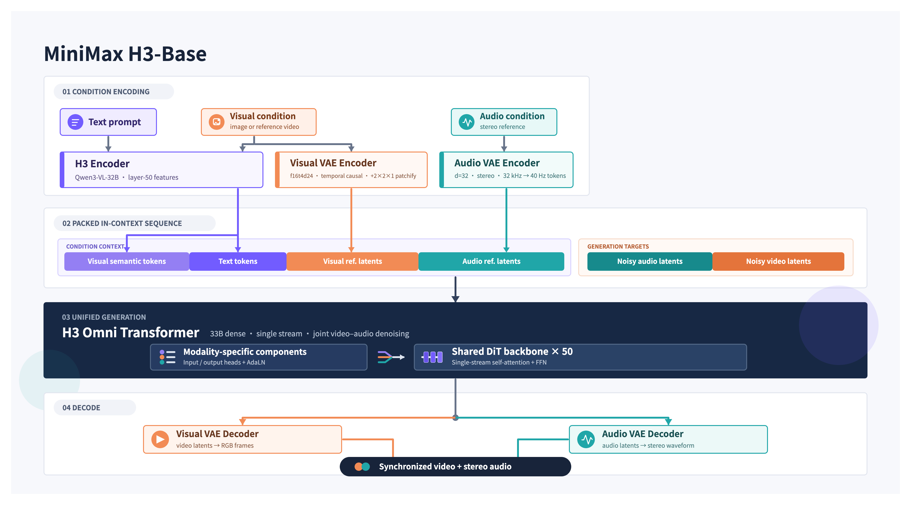

왜 지금 생성형 영상 AI인가
생성형 영상 AI가 다시 가까워진 이유를 단순히 “영상이 더 잘 만들어져서”라고 말하면 빠지는 것이 많다.
최근 내게는 세 장면이 겹쳐 보였다. Higgsfield가 기간 한정으로 여러 영상 모델을 크레딧 차감 없이 써 볼 수 있게 했고, Google Flow는 Gemini Omni Flash를 무료 일일 크레딧 안에 넣었다. 이어 MiniMax H3는 영상·오디오 생성 모델의 가중치와 H3-Base 배포 경로를 공개했다.
세 일은 같은 종류가 아니다. 하나는 첫 생성의 비용을 낮췄고, 하나는 생성 결과를 고치는 제품 경험을 보여줬으며, 하나는 모델 구조와 배포 경로를 읽을 수 있는 공개 artifact를 만들었다.
그래서 지금의 변화를 “영상 AI 대중화의 단일 원인”으로 단정하고 싶지는 않다. 이용자 수나 생성량이 얼마나 늘었는지 보여 주는 시장 지표가 여기에는 없다. 다만 2026년 중반에 영상 생성에 들어가는 비용, 제품 접근, 배포 선택지가 서로 다른 방향에서 동시에 완화됐다는 신호로는 읽을 수 있다.
무료로 한 번 눌러 보는 입구, 크레딧으로 결과를 고쳐 보는 입구, 공개된 구조를 읽는 입구가 같은 시기에 생겼다.
1. Higgsfield: 일단 만들어 보는 비용이 내려갔다
영상 AI는 결과가 좋아도 첫 시도가 비싸면 넓게 퍼지기 어렵다. 프롬프트가 맞을지, 원하는 카메라 움직임이 나올지, 같은 장면을 몇 번 다시 뽑아야 할지 모르는 상태에서 매번 비용을 계산해야 하면 실험 자체가 줄어든다.
Higgsfield의 2026년 7월 프로모션은 이 장벽을 정확히 건드렸다. 가입 후 7월 23일 13:30 UTC 전 1일 trial을 활성화한 사용자는, 24시간 동안 20개 이상 모델을 크레딧 차감 없이 생성할 수 있다고 안내했다.[1]
이 이벤트는 이미 끝났다. 상시 무료 서비스도 아니었다. 카드 정보를 입력해 trial을 활성화해야 했고, 취소하지 않으면 trial 뒤 Plus 구독으로 자동 갱신된다고 안내했다.[1] 그렇기 때문에 이것을 “영상 AI가 공짜가 됐다”는 사례로 쓰면 틀린다.
그래도 이 이벤트가 흥미로운 이유는 분명하다. 완성본을 꾸준히 제작하는 비용이 아니라, 처음 여러 번 눌러 보고 비교하는 비용을 잠시 없앴기 때문이다. 이 단계에서는 사용자가 특정 모델을 깊게 이해하기 전에 스타일, 카메라, 짧은 쇼츠 장면을 시도해 볼 수 있다. 이런 조건은 영상 AI를 전문가 데모 밖에서 시험해 볼 가능성을 넓힌다.
2. Google Flow와 Gemini Omni Flash: 생성 다음에 편집이 붙었다
Higgsfield가 “일단 만들어 보자”의 입구였다면, Google Flow는 그 결과를 어떻게 계속 만질지를 보여주는 입구다.
현재 Flow 공식 페이지에는 무구독 Free tier에 50 daily Google Flow credits와 Gemini Omni Flash가 포함된다고 표시된다.[2] Google은 2026년 5월 Gemini Omni Flash를 Gemini 앱, Google Flow, YouTube Shorts에 선보인다고 발표했다.[8]
여기서 중요한 것은 50이라는 숫자 자체보다 사용의 단위다. 한 번의 결과에 모든 크레딧을 쓰는 대신, 같은 장면을 만들고 다시 고치고 참조를 바꾸고 한 번 더 시도할 수 있다. 영상 생성이 한 줄 프롬프트의 승부가 아니라, 생성 결과를 다음 편집의 입력으로 삼는 루프가 된다.
Gemini Omni Flash는 텍스트·이미지·오디오·비디오를 입력으로 받고, 자연어 대화로 영상을 생성하고 편집하는 기능을 제공한다.[3] 모델 카드는 이를 Transformer 기반 native multimodal 모델로 설명한다.[4] 다만 이 공개 범위를 H3처럼 읽으면 안 된다. Google은 VAE·tokenizer·영상 token·샘플링 과정 같은 세부 생성 파이프라인을 공개하지 않았다. Gemini Omni Flash에서 확인할 수 있는 변화는 내부 구조보다 대화로 생성 결과를 이어서 편집하는 제품 경험이다.
Flow의 무료 tier도 고정된 보편 조건은 아니다. Google 계정과 만 18세 이상 조건이 전제되며, 공식 페이지는 Google AI 구독 tier, 웹·모바일 플랫폼, 지역에 따라 기능이 달라질 수 있다고 밝힌다.[2] 그래서 이 글에서 말하는 것은 ‘모든 계정이 언제나 같은 50 credits를 받는다’가 아니라, 영상 생성과 편집을 무료 일일 크레딧으로 경험할 수 있는 제품 경로가 실제로 열렸다는 점이다.
3. MiniMax H3: 모델을 보는 방식도 달라졌다
H3는 무료 크레딧이나 웹 UI와는 다른 입구다. 결과 영상만 받는 대신, 영상과 오디오를 어떤 표현으로 바꾸고 어떤 모델이 그 표현을 생성하는지까지 읽을 수 있는 공개 artifact가 나왔다.
H3-Base의 흐름은 대략 이렇다.
text / image / video / audio
→ H3-Encoder + VisualVAE + AudioVAE
→ packed multimodal sequence
→ 33B H3-Omni-Transformer
→ video latent + stereo-audio latent 공동 예측
→ 영상과 스테레오 오디오
그림 1. MiniMax가 공개한 H3-Base 구조. Condition Encoding → Packed In-Context Sequence → Unified Generation → Decode의 흐름을 보여준다. 출처: MiniMax H3 README.
H3-VisualVAE는 영상의 시간·공간 정보를 압축한다. README 기준 공간을 16배, 시간을 4배 압축하고 24개 latent channel을 사용한다. Transformer는 원본 영상의 모든 픽셀을 직접 다루는 대신, 이 압축된 visual token을 다룬다.[5]
H3-AudioVAE는 오디오를 별도 latent로 만들고, 33B dense single-stream H3-Omni-Transformer는 video·audio latent를 공동으로 예측한다.[5] 이것이 립싱크나 긴 장면의 일관성을 자동으로 해결한다는 뜻은 아니다. 다만 영상과 소리의 관계를 마지막에 덧붙이는 것이 아니라, 같은 생성 단계에서 풀려는 구조라는 점은 읽을 수 있다.
이런 압축과 멀티모달 생성 구조는 영상 AI가 갑자기 싸고 쉬워졌다는 설명은 아니다. 하지만 시간축이 있는 영상, 여러 입력 조건, 오디오를 계산 가능한 범위 안에서 함께 다루려면 어떤 구성 요소가 필요한지 읽게 하는 사례로 볼 수 있다.
다만 H3의 공개 범위는 정확히 읽어야 한다. 공개된 H3-Base는 768p 로컬 배포 경로를 제공하지만, H3-Context-IR은 초기 공개 릴리스에 포함되지 않았고 H3-Regenerate-2K는 별도 API 경로에 남아 있다.[5] README의 SGLang 4-GPU 구성도 배포 예시일 뿐 최소 하드웨어 사양은 아니다.[5]
더 중요한 경계도 있다. H3 Community License는 대한민국을 Excluded Territory로 명시한다.[6] 따라서 한국 독자에게 “이제 H3를 자유롭게 로컬에서 돌릴 수 있다”라고 쓰면 안 된다. 대한민국은 기본 Community License의 적용 대상에서 제외되므로, 한국에서 H3 Works를 실행·배포하려면 MiniMax의 별도 라이선스 또는 서면 허가가 필요하다. 최종 적용 가능성은 MiniMax와 확인해야 한다.
Seedance 2.5는 이 흐름의 어디에 있나
Seedance 2.5는 Higgsfield의 무료 이벤트나 Flow의 일일 credits, H3 공개와 같은 종류의 촉발점은 아니다. 대신 접근 경로가 열렸을 때 제품이 어떤 제작 기능을 묶으려 하는지 보여주는 사례다.
ByteDance Seed는 Seedance 2.5를 audio-video joint generation 모델로 소개하며, 한 번에 최대 30초 생성, 두 차례 확장, 참조 제어와 오디오·시각 편집을 제시한다.[7] 여기서 중요한 것은 “30초”라는 숫자만이 아니다. 참조를 넣고, 장면을 이어 가고, 일부를 바꾸는 기능이 하나의 제작 화면에 붙고 있다는 점이다.
다만 Seedance 2.5의 encoder, VAE, Transformer, latent, 가중치는 공식 자료에서 확인되지 않는다. H3의 공개 구조와 Seedance의 공개 제품 기능을 같은 종류의 정보처럼 섞으면 안 된다. H3는 구조를 읽는 사례, Seedance는 제작 기능을 읽는 사례다.
그래서 활용 사례가 더 보이기 시작했다
이 세 경로는 서로 다른 사람을 끌어들인다.
- 한시 무료 생성과 웹 UI는 쇼츠나 스타일 실험을 해 보고 싶은 사람의 첫 시도를 만든다.
- Flow의 일일 credits와 대화형 편집은 장면을 여러 번 수정하며 결과를 발전시키고 싶은 제작자에게 맞는다.
- H3의 공개 artifact는 모델 구조와 배포 경로를 검토하려는 개발자에게 다른 종류의 정보를 준다. 다만 한국에서의 실사용 권한은 별도 문제로 남는다.
따라서 영상 AI 활용 사례가 늘어난다는 말은 모두가 같은 모델을 쓰기 시작했다는 뜻이 아니다. 비용, 제품 경험, 기술적 접근이라는 서로 다른 장벽이 동시에 낮아지거나 달라지면서, 각자의 조건에서 시도할 수 있는 사람이 늘어나는 흐름에 가깝다.
물론 이 사례만으로 시장 전체의 대중화를 증명할 수는 없다. 무료 이벤트는 끝나고, credits는 제한되며, 지역과 tier에 따라 제공 범위가 달라진다. 로컬 경로에는 GPU·메모리·호환성·라이선스 문제가 남는다. 인물 동일성, 정확한 텍스트, 긴 시간의 물리, 저작권과 실존 인물·음성 동의도 여전히 별도의 검수 문제다.
마무리: 한 번의 유행보다 입구가 늘어난 일
지금 생성형 영상 AI를 다시 볼 이유는 특정 모델이 가장 멋진 한 컷을 만들기 때문만은 아니다.
Higgsfield의 한시 무료 생성은 “일단 해 보자”는 비용을 낮췄다. Google Flow와 Gemini Omni Flash는 결과를 대화로 수정하는 경험을 무료 일일 credits 안에 넣었다. MiniMax H3는 조건부 공개를 통해 영상·오디오 생성 구조와 배포 경로를 읽게 했고, 동시에 라이선스와 하드웨어라는 경계도 드러냈다. Seedance 2.5는 참조·확장·편집이 다음 제품 표면이 되고 있음을 보여준다.
이것들이 영상 AI 대중화의 단일 원인이라고 말할 수는 없다. 하지만 서로 다른 입구가 같은 시기에 열렸다는 사실은, 생성형 영상 AI를 활용한 시도가 늘어날 수 있는 조건을 설명하는 하나의 신호다.
그래서 지금의 질문은 “어느 모델이 제일 좋은가”보다 이쪽에 가깝다.
나는 한 번의 생성이 필요한가, 결과를 계속 고칠 제작 루프가 필요한가, 아니면 공개된 구조와 배포 경로를 검토할 필요가 있는가?
Sources
[1] https://higgsfield.ai/blog/free-unlimited-ai-video-generation-2026 — Higgsfield free unlimited video generation 2026 [2] https://labs.google/fx/tools/flow — Google Flow [3] https://ai.google.dev/gemini-api/docs/omni — Gemini Omni video generation and editing [4] https://deepmind.google/models/model-cards/gemini-omni-flash — Gemini Omni Flash model card [5] https://github.com/MiniMax-AI/MiniMax-H3 — MiniMax H3 README [6] https://huggingface.co/MiniMaxAI/MiniMax-H3/raw/main/LICENSE — MiniMax H3 Community License [7] https://seed.bytedance.com/en/seedance2_5 — Seedance 2.5 [8] https://blog.google/intl/ko-kr/company-news/technology/gemini-omni-kr — Google Korea: Gemini Omni introduction